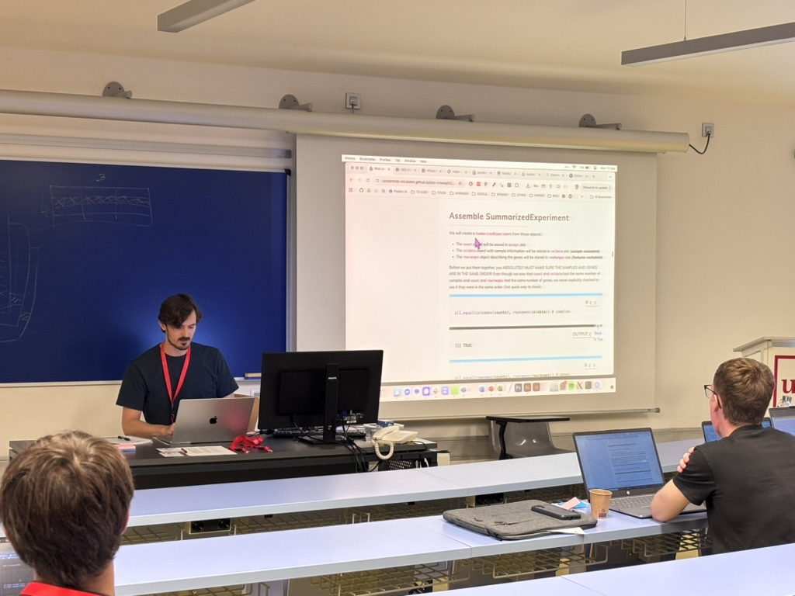
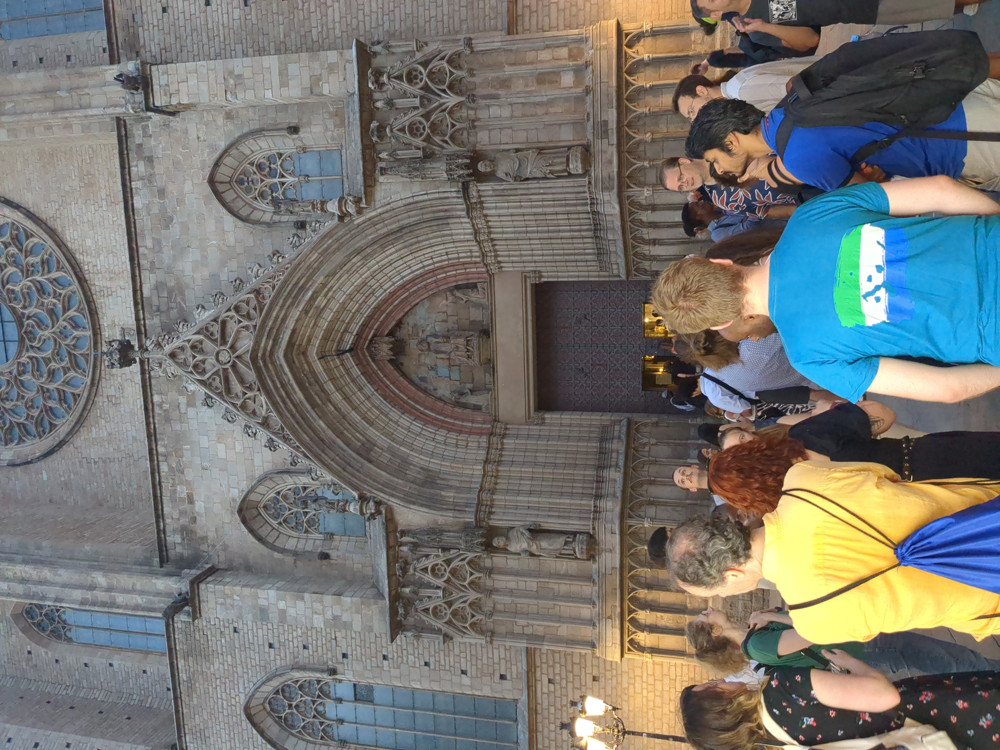

{width=“70%; class=”zoomable”; height:200px;“}
The European Bioconductor conference 2025 (EuroBioC2025) took place between September 17 and 19, 2025, and was hosted at the Barcelona Biomedical Research Park (PRBB) in Barcelona by the Department of Medicine and Life Sciences of Universitat Pompeu Fabra (MELIS-UPF)and the Barcelona Institute for Global Health (ISGlobal). The Catalan capital boasts a rich culture, a lively atmosphere, and a blend of art, history, and Mediterranean energy, which made it the perfect backdrop for a relaxing and learning atmosphere for EuroBioC 2025. The conference brought together 170 participants from all over the world to showcase the latest cutting-edge developments on Bioconductor software packages, as well as on broader emerging technologies impacting computational biology.
The map below shows participants of EuroBioC2025 per country.
Preconference
Prior to the conference, EuroBioC2025 hosted two Bioconductor Carpentry workshops on Bulk RNA-seq and Single-cell RNA-seq analysis. Each workshop attracted about 20 participants and ran on September 15 and 16. The Bulk RNA-seq analysis module was taught by Estefania Mancini, Vasileios Panagoitis Lenis, and Jacques Serizay, while the Single-cell RNA-seq analysis workshop was taught by Robert Ivánek, Mireia Ramos, and Kevin Rue-Albrecht. The sessions combined live coding with short theoretical explanations of the covered materials. The feedback from participants was incredibly positive, with many appreciating how practical and engaging the sessions were. One participant shared that “the hands-on experience brought by the instructors is the kind of thing that would have been difficult to get while going through the materials on our own,” while another highlighted “the written materials that include theory and explanation of the obtained results” as particularly useful. Participants in the Single-cell RNA-seq workshop appreciated “the comprehensive overview the lectures provided on scRNA-seq analysis,” noting that “they outlined the different steps clearly, using comparable timelines and emphasizing key details,” which “offers a standard framework for performing such analyses.” Those in the Bulk RNA-seq module praised “the materials [that] were really well prepared,” the “super nice instructors” who “tried to accommodate all of your needs,” and “gave many useful tips,” adding that the content would be valuable for future reference. Overall, the majority of respondents rated the workshops as “Very good” or “Excellent,” describing them as well-organized, easy to follow, and “an incredible learning experience” that boosted both their confidence and technical skills in using Bioconductor.


Programme overview
EuroBioC2025 featured a dynamic three-day program that balanced scientific excellence, community exchange, and practical training. The schedule brought together keynotes from leading researchers, short and flash talks showcasing new Bioconductor packages and methods, and hands-on workshops that deepened participants’ technical skills.
The opening keynote by Vince Carey reflected on 25 years of Bioconductor as a coherent ecosystem for genomic data science, setting the tone for a conference that celebrated both innovation and collaboration. Keynotes by Helena Crowell, Susan Holmes, James Sharpe, Noelia Ferruz, and Jacques Serizay explored cutting-edge topics spanning whole-transcriptome imaging, statistical modeling, spatial omics, and AI-driven protein design.
The short talks highlighted exciting package developments across the Bioconductor landscape, from metabolomics and spatial transcriptomics to reproducible workflows. The poster sessions showcased over 60 contributions, offering a vibrant space for discussion, collaboration, and mentorship.
On the final day, Birds-of-a-Feather (BoF) sessions encouraged open community dialogue on key issues, reinforcing Bioconductor’s collaborative ethos.
Keynotes
The keynote sessions at EuroBioC2025 brought together leading voices in bioinformatics, highlighting advances across genomics, spatial biology, and community-driven software development. Each talk provided attendees with both inspiration and practical insights into the evolving landscape of computational biology:
Vince Carey (Mass General Brigham - Harvard Medical School) opened the conference with “A coherent ecosystem for genomic data science: 25 years of Bioconductor,” reflecting on Bioconductor’s growth and its pivotal role in reproducible research.
Helena Crowell (Centre Nacional d’Anàlisi Genòmica - CNAG) presented “Colorectal cancer through the lens of whole transcriptome imaging,” showcasing how spatial transcriptomics can reveal novel insights into cancer biology.
Susan Holmes (Stanford University) delivered “Latent variables as the best medicine for heterogeneity,” exploring statistical approaches for understanding biological variation.
James Sharpe (EMBL Barcelona) introduced “C3PO: Cell 3D Positioning by Optical encoding and its application to spatial transcriptomics,” detailing innovative imaging and computational methods for 3D cellular mapping.
Noelia Ferruz (Centre de Regulació Genòmica - CRG) presented “Controllable protein design with language models,” demonstrating how AI and generative models are transforming protein engineering.
Jacques Serizay (Institut Pasteur) closed the keynotes with “Enhancing genomic research with community-driven flexible software,” emphasizing collaboration and openness in advancing genomic analysis.
Short Talks
EuroBioC2025 featured a vibrant lineup of short talks highlighting new computational tools and methods across multi-omics, spatial, and single-cell biology. Presentations ranged from multi-omics integration frameworks and probabilistic models for transcription factor activity to improvements in widely used packages such as edgeR and new interoperability initiatives with ELIXIR. Speakers also introduced emerging software for mass spectrometry, microbiome, and spatial data analysis, showcasing the community’s ongoing innovation in data-driven biology.
Workshops
The workshop sessions were a major highlight, offering attendees interactive learning experiences with the latest Bioconductor tools set up in a workshop cloud platform to avoid participants having to spend time installing software. From Orchestrating Spatial (Transcript-)Omics Analysis and Microbiome Analysis with Bioconductor, to authoring and deploying workshops on the new Bioconductor platform, these sessions emphasized reproducible workflows and cross-language integration for biological data analysis.
Poster Sessions
The poster sessions at EuroBioC2025 showcased a diverse range of projects reflecting the richness of the Bioconductor ecosystem. Topics included multi-omics integration, benchmarking analytical methods, AI-driven microbiome and cancer research, and interactive visualization tools. Attendees particularly appreciated the concise poster pitches that provided quick overviews of ongoing research and facilitated meaningful discussions during the sessions.
Birds of a Feather (BoF) Sessions
This year’s BoF sessions provided space for informal, collaborative discussions on key community topics. Participants shared perspectives on integrating Bioconductor with the Nextflow workflow manager, improving interoperability across tools, enhancing developer onboarding, and shaping the future of Bioconductor training and governance. These conversations captured the conference’s spirit of open collaboration and community-driven growth.
Infrastructure and tools
EuroBioC2025 Zulip
In June 2025, Bioconductor’s community chat moved from Slack to Zulip. The motivation behind the transition was to ensure long-term access to discussions on a platform that better reflects the project’s open-source values. Therefore, EuroBioC2025 used a dedicated Zulip workspace as the main digital hub for conference coordination and discussions. Zulip provided an organized, threaded platform where participants and organizers could collaborate seamlessly before, during, and after the conference.
The main channel was:
- #eurobioc-conference-everyone – for announcements, updates, and general conference discussions.
Inside #eurobioc-conference-everyone, the following topics were available to keep everything organised:
eurobioc2025:travel – for coordinating taxi shares, asking about transit options, and exchanging travel tips.
eurobioc2025:announcements – for conference updates, schedule changes, and important notices.
eurobioc2025:helpdesk – for participants to ask questions and receive assistance from organizers or fellow attendees.
eurobioc2025:general-chat – for casual conversations and connecting with other participants.
eurobioc2025:photos – for sharing snapshots and favorite moments from EuroBioC2025.
Scholarships
Thanks to the generous support of the sponsors, EuroBioC2025 awarded 27 scholarships to participants, enabling them to attend the conference in person. These scholarships helped ensure broader participation and continued Bioconductor’s commitment to equity, diversity, and inclusion within the community.
Sticker contest winners
The EuroBioC2025 sticker was eagerly anticipated by the community, and this year’s design did not disappoint. This year’s sticker, designed by Chaima Hkimi, beautifully captured the essence of Barcelona, featuring the Sagrada Família and the vibrant colours of Park Güell. In a creative touch, Chaima replaced the “i” in BioC with the Bioconductor logo — a clever nod to the project and its global community.
Learn more about Chaima and her winning design in our Mastodon announcement.
Sticker Hexwall

A fun new addition to EuroBioc2025 was the sticker hexwall; a colorful visual display of Bioconductor package stickers showcased at the photo-call area. The design, created by Kevin Rue-Albrecht, captured the variety and creativity within the Bioconductor community.
Conference materials
Recordings from EuroBioC2025 are available on the Bioconductor YouTube channel. Presenters were encouraged to upload their slides and posters to the Bioconductor Zenodo community, which allows their work to be assigned a DOI and makes it easier for others to access and cite. A short guide was shared to help contributors prepare and upload their materials effectively.
Upcoming conferences
Bioconductor Asia conference 2025 (BioCAsia2025) in Adelaide on Nov 27 - 28, 2025
European Bioconductor conference 2026 (EuroBioC2026) in Turku on June 3 - 5, 2026,
Bioconductor conference 2026 (BioC2026) in Fred Hutch Cancer Center, Seattle, WA, on August 10 - 12, 2026
Acknowledgements
Sponsors
{kind=link}
EuroBioC2025 was deeply grateful to all our sponsors for their generous support. Our Silver sponsors were Seqera, the Chan Zuckerberg Initiative, and the Department of Medicine and Life Sciences (UPF) and ISGlobal through their respective institutional grants Maria de Maeztu and Severo Ochoa. Bronze sponsors included the R Consortium, BigOmics Analytics, MedBio Informatics, and Physalia Courses.
Their contributions made it possible to deliver a high-quality in-person event and to promote equity, diversity, and inclusion by reducing registration costs and supporting scholarships for students and researchers from lower-income regions or with limited access to funding.
Hosts
Barcelona Biomedical Research Park (PRBB), Department of Medicine and Life Sciences - Universitat Pompeu Fabra (MELIS-UPF), Barcelona Institute of Global Health (ISGlobal)
Organising committee
Local Hosts and Organizers
- Robert Castelo, Universitat Pompeu Fabra, Spain
- Juan Ramon Gonzalez, Barcelona Institute of Global Health, Spain
- Mireia Ramos, Universitat Pompeu Fabra, Spain
- Helena Crowell, Centro Nacional de Análisis Genómico, Spain
Community Organizers
- Annekathrin Nedwed, Friedrich Miescher Institute for Biomedical Research, Switzerland
- Charlotte Soneson, Friedrich Miescher Institute for Biomedical Research, Switzerland
- Dario Righelli, University of Naples “Federico II”, Italy
- Davide Risso, University of Padua, Italy
- Eliana Ibrahimi, University of Tirana, Albania
- Federico Marini, University Medical Center Mainz, Germany
- James Dalgleish, University of Oxford, UK
- Kevin Rue-Albrecht, University of Oxford, UK
- Laurent Gatto, Université catholique de Louvain, Belgium
- Lena Morrill Gavarro, University of Oxford, UK
- Leo Lahti, University of Turku, Finland
- Lieven Clement, Ghent University, Belgium
- Maria Doyle, University of Limerick, Ireland
- Michael Stadler, Friedrich Miescher Institute for Biomedical Research, Switzerland
- Najla Abassi, Institut Pasteur de Tunis, Tunisia
- Robert Ivánek, University of Basel, Switzerland
- Simone Bell, EMBL Heidelberg, Germany
- Tuomas Borman, University of Turku, Finland
- Wolfgang Huber, EMBL Heidelberg, Germany
© 2025 Bioconductor. Content is published under Creative Commons CC-BY-4.0 License for the text and BSD 3-Clause License for any code. | R-Bloggers
Social interactions and networking
Conference dinner
The EuroBioC 2025 conference dinner was held at the Old Hospital de Sant Pau, a UNESCO World Heritage site. The cocktail-style event provided a relaxed setting to network, exchange ideas, and celebrate the vibrant Bioconductor community.
Walking Tour
As part of the conference’s social activities, attendees enjoyed a guided walking tour through Ciutat Vella, Barcelona’s historic old city. The tour wound through the vibrant neighborhoods of La Ribera and El Gòtic, offering glimpses of medieval streets, lively plazas, and ending at Plaça Reial, next to the famous La Rambla boulevard. Participants explored landmarks such as the former old market hall El Born, el Fossar de les Moreres, the Cathedral Santa Maria del Mar, and the old Roman city walls, while learning about the city’s evolution from its maritime roots to its modern cultural identity.
The tour was organized by Mireia Ramos Rodríguez and volunteers from the Bioconductor community who reside in Barcelona, making it a warm, locally guided experience for all participants.
